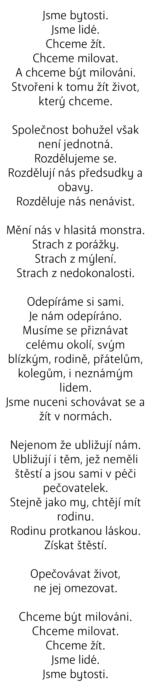
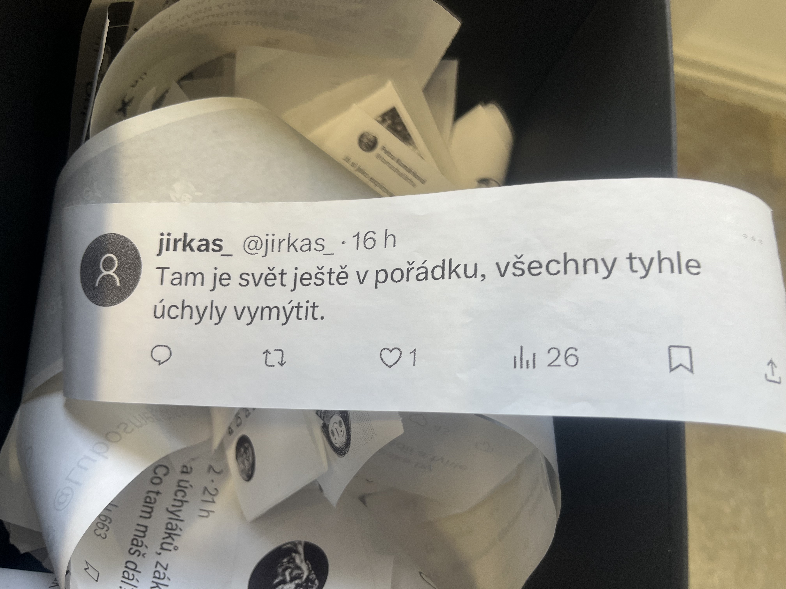
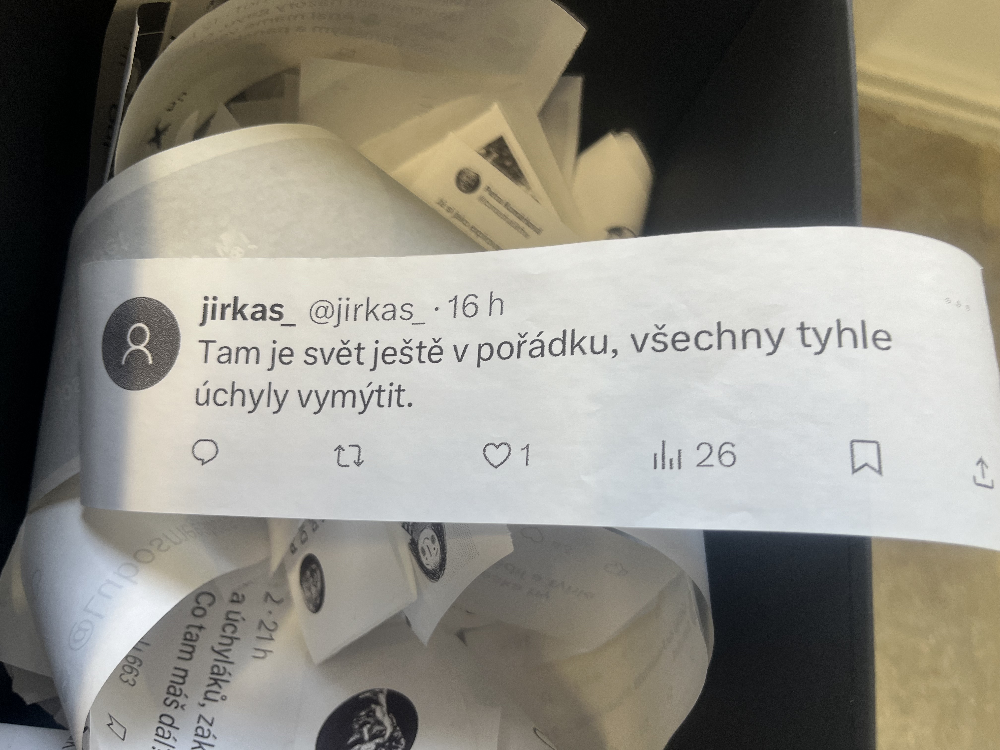
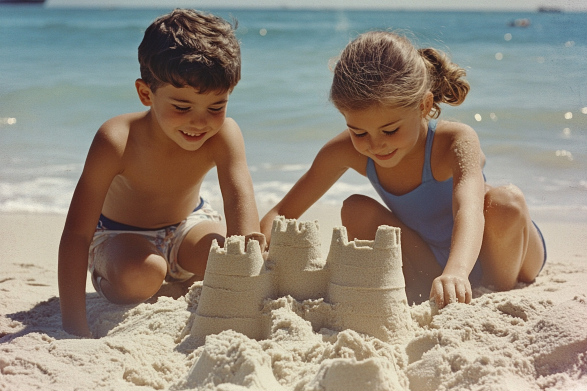
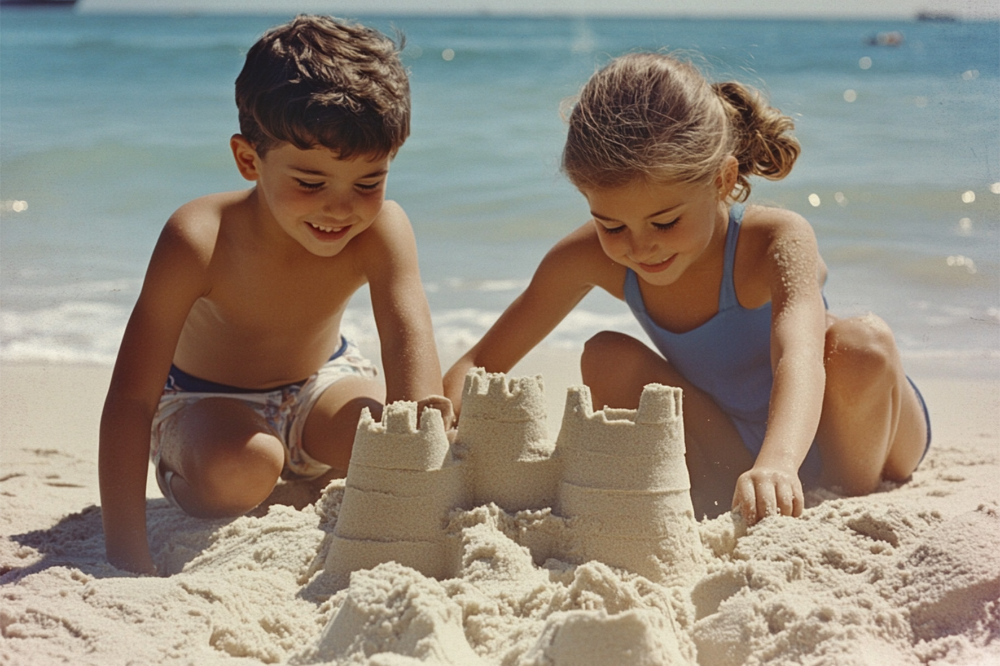
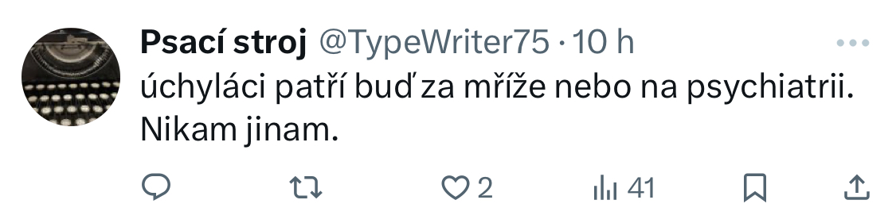
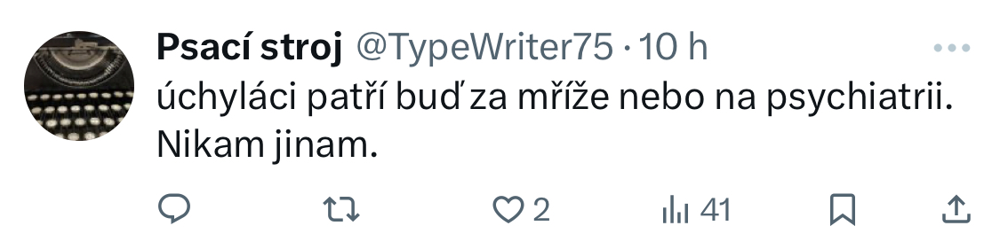

A.I. Art
RODINA pro všechny 2024
Dílo „RODINA pro všechny“ se věnuje tématům queer rodiny a hate kultury na sociálních sítích. Klíčovým vizuálním prvkem díla jsou dvě krabice, z nichž každá reprezentuje jiný aspekt tohoto problému. Jedna z nich symbolizuje nadějnou budoucnost a obsahuje fotografie autorovy fiktivní rodiny z budoucnosti, vytvořené pomocí umělé inteligence. Druhá krabice zobrazuje smutnou minulost, kterou ilustrují homofobní komentáře ze sociálních sítí a příklady diskriminace umělou inteligencí.
Fotografie byly vytvořeny prostřednictvím nástroje umělé inteligence Midjourney. Zobrazují smyšlenou budoucí rodinu autora – jeho děti Timmyho a Olayu, a také manžela. Autor však při jejich tvorbě narazil na zajímavý problém: umělá inteligence často nahrazovala dva otce kombinací jednoho otce a jedné matky, což naznačuje hluboce zakořeněné stereotypy v jejím fungování.
Homofobní komentáře byly sesbírány během jednoho semestru z platforem jako X, Instagram, TikTok a Facebook. Tyto komentáře byly záměrně vytrženy z původního kontextu, což odráží způsob, jakým mohou mladí queer lidé vnímat nenávistné projevy na internetu. Bez znalosti širšího kontextu se při čtení těchto zpráv zvyšuje jejich emocionální dopad a zdůrazňuje hrůznost samotného obsahu.

{kind=link}

 

{kind=link}

 

{kind=link}

 

{kind=link}
Ragnarök 2022
Projekt Ragnarök vyobrazuje scény z příběhu Ragnarök: konečný osud bohů, které jsou zpracovány za pomocí A.I. (Umělé inteligence) v programu MidJourney. Cílem bylo prozkoumat vizuál děl ze severské mytologie, které se do dnešní doby nedochovaly, nebo dokonce ani neexistovaly. To mohlo být způsobeno životním stylem Seveřanů, kteří byli nájezdníci a okupovali nová místa. První obrazové zmínky se objevují až v 19.století, čemuž můžeme vděčit tomu, že se příběhy přeložily ze staré norštiny do angličtiny, a tak pro umělce bylo možné příběhy zpracovat.
V rámci projektu autor zpracoval VR video, ve kterém se zobrazují finální díla vytvořená A.I. generátorem. Video se od finálního díla retrospektivně vrací zpět přes různé varianty děl, u kterých selektoval ze čtyř různých obrazových zdrojů. Díla doprovází texty, jež byly využity jako promt - zadání pro výsledek obrazu. V závěru se video obrací až na počáteční frázi, ze kterého vznikala první verze díla. Projekt končí nápisem příběhu Ragnarök, ze kterého plyne celá práce.
Záměrem tedy bylo spekulovat nad vizuální stránkou severského umění z dané doby a prozkoumání umělé inteligence, jakožto nástroj umožňující tvorbu děl z velké databáze obrazových zdrojů. Je zajímavé sledovat, jak si umělá inteligence poradí se zažitými jmény jako jsou Thor, Loki, Odin, které zpopularizovalo studio Marvel v jejich filmech o superhrdinském bohovi. Další varianta, která se jevila jako zajímavá, bylo zkoumání toho, jak si umělá inteligence poradí bez zmíněných jmen a pouze jenom s popisem děje a vložením tagu, že se jedná o severskou mytologii. Ve finále autor přišel na to, že jakožto rozený Čech, který nemá kořeny s danou kulturou, nemůže být ten, který bude reprodukovat díla na motivy severské mytologie, proto se projekt stává autorovou subjektivní selekcí tématu. A tak umožňuje A.I. generátoru tvořit na motivy ze severské mytologie, jelikož daný generátor má rozsáhlou databází od lidí různých kultur, a tak může být mnohem lépe propojený s kořeny severského národa.